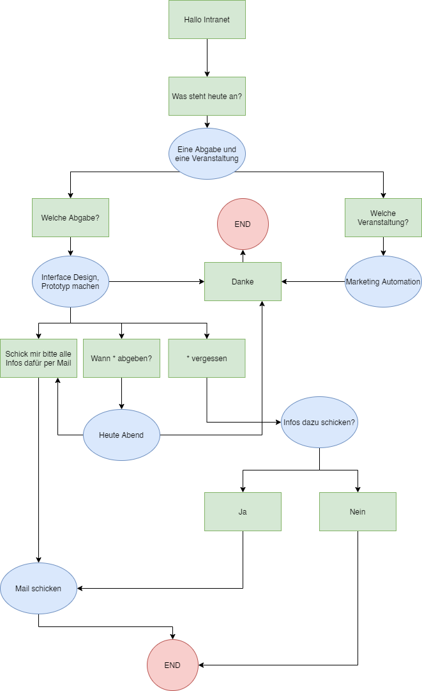

Damit der Sprachassitent funtioniert, muss man ihn mit Hallo Intranet begrüßen. Hat er dies wahrgenommen, so antwortet er mit einem Ton. Das heißt, dass er bereit ist einen Befehl entgegen zu nehmen.
Dieser Audioassistent funktioniert nur in Google Chrome. Bei anderen Browsern kann es sein, dass dieser nur teilweise oder auch garnicht funktioniert.
Nutzungshinweise
Der Sprachassistent kann die im folgenden Flowchart gezeigten Befehle (grün markiert) bearbeiten.

Beispielgespräch
Varianten von Befehelen
Durch den smart-Befehl von Artyom ist es mir möglich gewesen, Befehle allgemein
zu halten.
Unter indexes wird durch das Sternechen (*) in 'Wann *
abgeben' ermöglicht, dass zwischen den Wörtern "wann" und "abgeben" alles gesagt werden kann,
damit der Befehl ausgeführt wird. Beispiele folgen nun:
artyom.addCommands({
smart: true,
indexes: ['Schick mir bitte alle Infos dazu', 'Wann * abgeben', '* vergessen'],
action: function (i, wildcard) {
wildcard = null;
if (context == 'today_task' && i == 0) {
sendMail();
}
if (context == 'today_task' && i == 1) {
context = 'today_task_when';
artyom.say('Heute abend um 18 Uhr. Du hast also noch 9 Stunden und 38 Minuten dafür Zeit');
}
if (context == 'today_task' && i == 2) {
artyom.sayRandom([
'Mach dir keine Sorgen.',
'Kein Stress',
]),
artyom.say('Ich kann dir alle Informationen dazu per Mail schicken. Soll ich das machen?')
context = 'today_task_forget'
}
}
});
Befehle
Hallo Intranet
Stop
Der Befehl Stop beendet die aktuelle Wiedergabe. Geleichezeitig führt der Assistent keine Befehle aus. Dies geschieht erst, wenn wieder Hallo Intranet gesagt wird.
Jetzt
Der Befehl Jetzt führt den soeben gesprochenen Befehl sofort aus.
Feedback
Startton
Dieser Befehl gibt dem Nutzer Feedback, dass der Assistent nun bereit ist, um einen Befehl anzunehmen und diesen zu verarbeiten. Gleichzeitig ist das auch der Anfang eines Gesprächs innerhalb eines Kontext.
Endton
Dieser Ton zeigt an, dass das Gespräch beendet ist. Der Assistent hat den Kontext vergessen. Um ein neues Gespräch anzufangen, muss wieder Hallo Intranet gesagt werden.
Kein Befehl gefunden
Kann der Assistent bei einer Frage nicht weiterhelfen, so gibt er dies auch an den Nutzer weiter.
Sonstiges
Nicht implementierte Dinge
Abschalten nach 3 Sekunden
Wenn der Assistent auf einen Befehl wartet, aber nach 3 Sekunden keiner kommt, schaltet er sich
ab und wartet bis Hallo Intranet gesagt wird. Dabei wird der Konext
gelöscht.
Hierz fehlte mir eine Funktion innerhalb Artyoms. Eine eigene Implementierung ist mir nicht
gelungen.
Gespräch wird nicht immer automatisch Beendet
Nach artyom.say konnte ich keine Methode mehr aufrufen, die das Gespäch beendet und den Sprachassistent wieder zurücksetzt. Darum musste ich den Befehl Danke einführen. Dieser führ die Methode youAreWelcome() und contextEnd() aus. Letztere übernimmt die Aufgabe des Zurücksetzts.
Kontext
Mit der Variable context wird garantiert, dass der Gesprächsverlauf
fortlaufend ist. Das heißt, der Assistent merkt sich bis zum abschalten des Gesprächs, über welches Thema
gerade gesprochen wird und an welcher Stelle die Konversation gerade ist.
Durch eine if-Abfrage des Kontext kann dann entschieden werden, welcher
Text der Assistent ausgeben soll. Der Wert der Vaiable wird bei jeder Spracheingabe des Nutzers neu
gesetzt.
artyom.addCommands({
indexes: ['Öffne schon mal alles auf meinem PC dafür', 'Öffne dafür alles auf meinem PC'],
action: function (i) {
if (context == 'today_lecture' && (i == 0 || i == 1)) {
j = 0;
context = 'today_lecture_open';
youAreWelcome()
artyom.when('SPEECH_SYNTHESIS_END', function () {
if (j == 0) {
sayBye();
j++;
}
})
artyom.when('SPEECH_SYNTHESIS_END', function () {
if (j == 1) {
isEnding = true;
contextEnd();
j = null;
}
})
}
}
});
Methoden/Funktionen
Wiederholende Elemente habe ich in Methoden ausgelagert. Diese werden bei Bedarf getriggert und ausgerufen. Somit ist eine einfche Überearbeitung einzeler Segmete gegeben.
Unterschiede zum Konzept
Der Prototyp weicht vom Konzept ab. Ich habe beim testen bemerkt, dass kürzere Unterhaltungen angenehmer und sinnviller für den Nutzer sind. Deshalb fragt der Assistent nach Durchführung einer Aufgabe nicht mehr nach, ob er noch etwas anderes tun könne. Nach Beenidigung einer Aufgabe ertönt der Endton. Möchte der Nutzer nun eine neue Aufgabe an den Spachassistent weitergeben, so muss dieser wieder den Befehl Hallo Intranet verwenden.